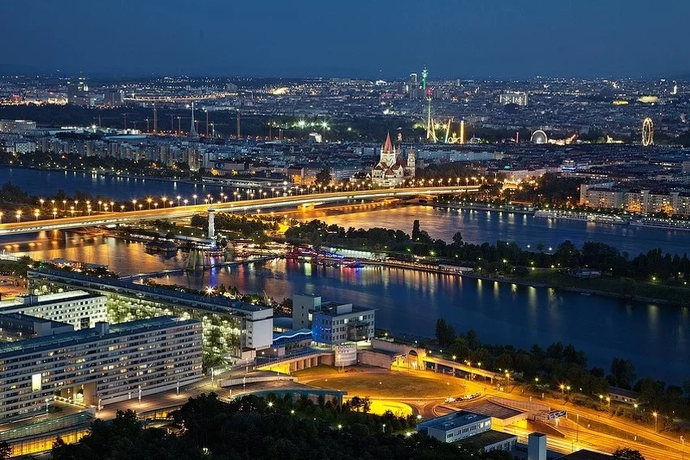
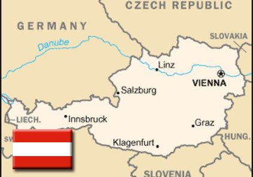
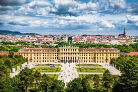
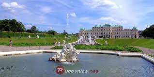
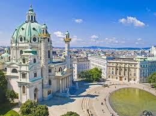
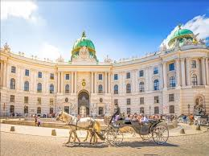
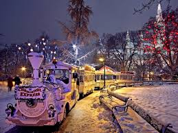
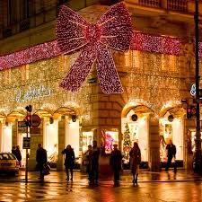
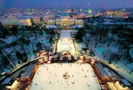

Život je ono što te srećnim čini
Beč (Vienna)

×

Država: Austrija
Broj stanovnika: više od 1.800.000
Beč je 10. najveći grad Europske unije, daleko najveći grad Austrije i njezino političko, gospodarsko i kulturno središte. Grad leži na Dunavu u najistočnijem dijelu Austrije nedaleko od granice s Slovačkom, Mađarskom i Češkom, na raskršću putnih pravaca sjever-jug, povezujući Baltik s Jadranom, i zapad-istok, povezujući zapadnu i srednju Europu s jugoistočnom Europom i dalje Azijom. Povijest Beča počinje prije više od 4 tisućljeća čime se područje grada svrstava među najstarije ljudske naseobine na svijetu.
Najpoznatije znamenitosti grada
Beč je tako jedna od najstarijih metropola u srcu Europe, carski grad i mjesto ukrštanja raznih kultura i utjecaja.
Bio je sjedište imperatora Svetog rimskog carstva, glavni grad Austrijskog carstva te Austro-Ugarske monarhije kada je i dostigao svoj vrhunac krajem 19. stoljeća i s oko 2.000.000 stanovnika predstavljao četvrti grad po veličini na svijetu.
Fotografije:







Grad je, između ostalog, i jedno od najomiljenijih europskih odredišta turista iz čitavog svijeta ali i imigranata koji čine, posebno posljednjih godina, veliki dio u broju gradskog stanovništva. Grad godišnje posjete milijuna turista najviše zahvaljujući mnogobrojnim kulturno-povijesnim spomenicima i raznovrsnoj kulturnoj ponudi. Beč nosi i nadimak Glazbeni glavni grad je su u njemu živjeli kompozitori kao što je Wolfgang Amadeus Mozart ili Ludwig van Beethoven. Na osnovu studije konzultantske firme za ljudske resurse "Mercer" o kvalitetu života u svjetskim metropolama, Beč je 2015. godine proglašen najboljim gradom za život na svijetu.